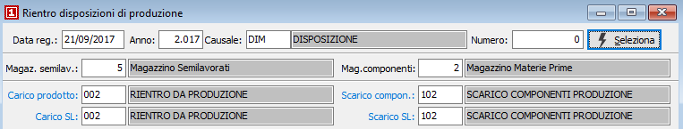
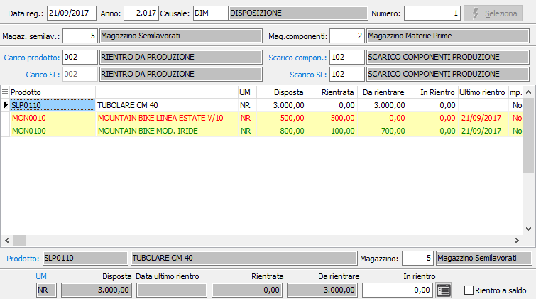

annullata la selezione altrimenti il contrario). È anche possibile utilizzare il menù indicato a lato (attivato tramite la pressione del tasto destro del mouse). È consentito selezionare o deselezionare un solo rigo oppure tutte le righe.
annullata la selezione altrimenti il contrario). È anche possibile utilizzare il menù indicato a lato (attivato tramite la pressione del tasto destro del mouse). È consentito selezionare o deselezionare un solo rigo oppure tutte le righe.Rientro disposizioni di produzione
La procedura consente di registrare il rientro in magazzino per i prodotti disposti. La parte superiore della finestra presenta i parametri selezione della disposizione, i codici dei magazzini relativi a semilavorati e materie prime e le causali di magazzino prefisse alla movimentazione.

DATA REGISTRAZIONE: definisce la data con cui devono essere registrati i movimenti di magazzino relativi al rientro dei prodotti, viene proposta la data di sistema.
ANNO: anno della disposizione da selezionare.
CAUSALE: codice della Causale disposizioni da selezionare. Sul campo sono attive le funzioni di ricerca (F9).
NUMERO: numero della disposizione da selezionare. Sul campo sono attive le funzioni di ricerca sulle disposizioni inserite (F9).
MAGAZZINO SEMILAVORATI: codice del magazzino da utilizzare per i progressivi dei semilavorati. Sul campo sono attive le funzioni di ricerca (F9) sulla tabella magazzini. Viene proposto, se attiva la gestione, quello riportato in configurazione produzione.
MAGAZZINO COMPONENTI: codice del magazzino da utilizzare per i progressivi delle materie prime. Sul campo sono attive le funzioni di ricerca (F9) sulla tabella magazzini. Viene proposto quello riportato in configurazione produzione.
CARICO PRODOTTO: codice della causale di magazzino da utilizzare per effettuare il carico del prodotto derivante dalla disposizione. Sul campo sono attive le funzioni di ricerca (F9) sulla tabella causali di magazzino. Viene proposta la causale predefinita inserita in configurazione produzione.
CARICO SEMILAVORATO: codice della causale di magazzino da utilizzare per effettuare il carico dell'eventuale semilavorato, se gestito sulla disposizione . Sul campo sono attive le funzioni di ricerca (F9) sulla tabella causali di magazzino. Viene proposta la causale predefinita inserita in configurazione produzione.
SCARICO COMPONENTI: codice della causale di magazzino da utilizzare per effettuare lo scarico dei componenti del prodotto, ovvero il dettaglio del rigo dalla disposizione. Sul campo sono attive le funzioni di ricerca (F9) sulla tabella causali di magazzino. Viene proposta la causale predefinita inserita in configurazione produzione.
SCARICO SEMILAVORATO: codice della causale di magazzino da utilizzare per effettuare lo scarico dell'eventuale semilavorato, se gestito sulla disposizione. Sul campo sono attive le funzioni di ricerca (F9) sulla tabella causali di magazzino. Viene proposta la causale predefinita inserita in configurazione produzione.
La pressione del pulsante Seleziona porta le righe della disposizione nella griglia sottostante, da cui è possibile selezionare le quantità per cui generare i movimenti di rientro in magazzino.

In questa sezione è possibile scegliere per quali prodotti della disposizione generare i movimenti di magazzino di rientro; è possibile modificare il magazzino di rientro, definire la quantità rientrata e l'eventuale rientro a saldo. Se attiva la gestione del dettaglio quantità, in automatico al momento dell'accesso al campo quantità, sarà visualizzata la relativa finestra di dettaglio quantità.
Per selezionare oppure annullare la selezione di un rigo è possibile utilizzare il doppio clic del mouse sul rigo interessato (se selezionato verrà annullata la selezione altrimenti il contrario). È anche possibile utilizzare il menù indicato a lato (attivato tramite la pressione del tasto destro del mouse). È consentito selezionare o deselezionare un solo rigo oppure tutte le righe.
Se un rigo viene selezionato lo sfondo appare di colore giallo, se è già stato precedentemente effettuato un rientro lo sfondo assume un colore giallo molto più chiaro, se il rientro è parziale la scritta compare in verde, se è totale in rosso; altrimenti lo sfondo rimane bianco.
La pressione sul pulsante Salva posto sulla toolbar determina l'esecuzione dell'elaborazione e la conseguente generazione dei movimenti di magazzino per i prodotti selezionati.